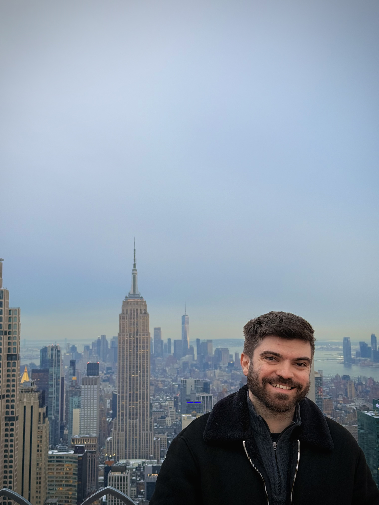

ICML 2026
Generalized Schrödinger Bridge on Graphs
Panagiotis Theodoropoulos, Juno Nam, Evangelos A. Theodorou, and Jaemoo Choi.

I am a Machine Learning PhD student in the Autonomous Control and Decision Systems (ACDS) Lab at Georgia Tech, advised by Prof. Evangelos Theodorou.
I focus on incorporating optimality and domain-specific structures into diffusion models, aiming to deepen theoretical insights and create scalable algorithms. My research lies at the intersection of dynamic optimal transport and stochastic optimal control, contributing mainly in the field of Schrödinger Bridge for applications in generative modeling, unpaired image translation, crowd navigation, and opinion depolarization.
In summer 2026, I was a Machine Learning Research Associate at Morgan Stanley ML Research in New York, mentored by Wei Deng.
Current focus
My research spans four main areas that contribute to a principled understanding of deep learning systems and their optimization dynamics. You can find a list of my papers in the Selected Publications section. Here are some of my main research directions:
See my Google Scholar profile for the complete list.
ICML 2026
Panagiotis Theodoropoulos, Juno Nam, Evangelos A. Theodorou, and Jaemoo Choi.
NeurIPS 2025
Panagiotis Theodoropoulos, Augustinos D. Saravanos, Evangelos A. Theodorou, and Guan-Horng Liu.
ICLR 2025
Panagiotis Theodoropoulos, Nikolaos Komianos, Vincent Pacelli, Guan-Horng Liu, and Evangelos A. Theodorou.
ICLR 2024
Panagiotis Theodoropoulos, Guan-Horng Liu, Tianrong Chen, Augustinos D. Saravanos, and Evangelos A. Theodorou.
Peer review service for machine learning conferences, workshops, and journals.
Head Teaching Assistant · Georgia Institute of Technology
COE 2001: Statics · Spring 2025